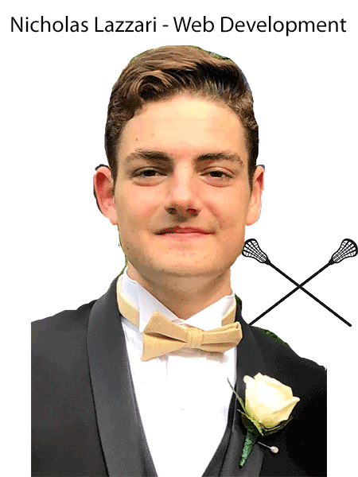

Hello, my name is Nicholas Lazzari and I am an Information Management & Technology major, who is pursuing a concentration in Web Development. I am interested in all types of front-end development. I have a very basic knowledge of Python, and over the summer I had begun learning swift.
Outside of the classroom, some of my hobbies include playing lacrosse, watching football and basketball, and working out. I grew up in north Jersey (about 20 minutes outside NYC) with my mother, father, older brother, and my dog Stewie. Over the summer, I worked at two seperate jobs in my hometown which are as follows:
As I continue my journey at Syracuse, I look to further my knowledge in all things pertaining to front-end development, especially web design.
© 2020